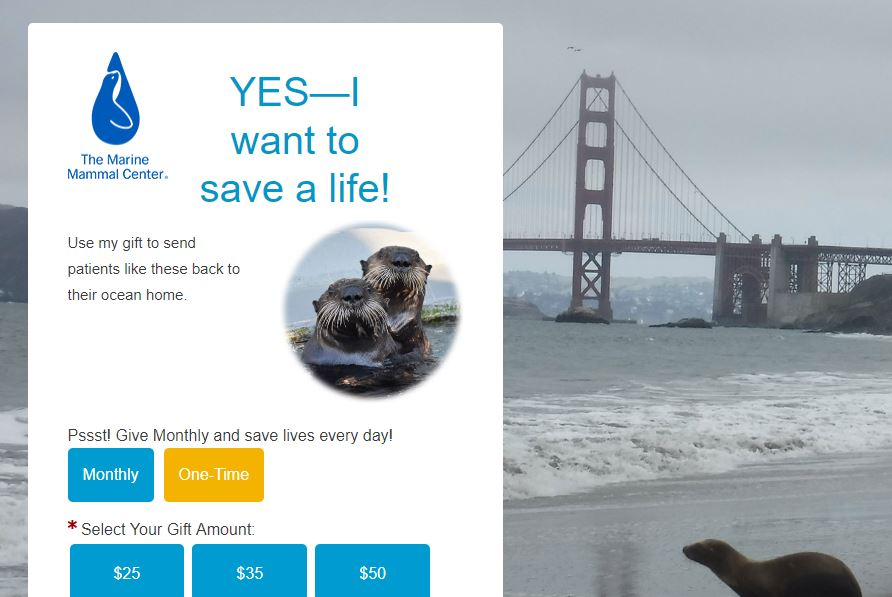

How much information is too much?
My website of choosing is The Marine Mammal Center in Sausalito, California. As a former volunteer and this being Earth Day, I thought it would be appropriate to discuss what this website gets right and where things could be better.
The challenge here is how to incorporate a lot of information in one place and how to organize it accordingly. When you first land on the home page you're almost overwhelmed with text yet four large rotating pictures that almost seem unrelated - donation, volunteer, education, and environmental awareness. It's a lot to take in especially if your primary purpose of visiting is to see pictures of cute pinnipeds. And although the nav bar at the top has ten buttons (yes, TEN), it can be confusing if you're not sure where you're supposed to go.
Shut up and take my money
The one thing about this website that I think could use some help is making the call to action to report animals in distress and the ask for donations could be a little more prominent. The phone number is listed but almost in a spot where I don't think I would look for it - in the upper right hand corner, next to the sign up for the email updates. As for the donation section, it is offset by a different color - orange. This is a good use of color in that orange and blue work well together as a color scheme but one would almost think to look for a larger and possibly green DONATE HERE button. But once you click the button, you are taken to a separate page where you can get your heartstrings tugged upon & the cute fuzzy faces of sea otters and in the background a young California sea lion is racing back to the ocean with the iconic Golden Gate Bridge as his backdrop.
What's the difference between a sea lion and a harbor seal?
What the website does right is give information and a lot of it. Being an animal rescue, hospital, and research facility all in one, there is so much science and data and Latin to be found on the pages. This is good especially if you're doing heavy research or looking to learn about TMMC and the work they do and have done. The text is clear and readable and makes use of the tried & true blue type to indicate links for more information. The fonts are simple and sans serif so that simplicity is achieved. The images are clear and high resolution so you don't mix up your elephant seals with your fur seals.
All the pinniped information in the world ... in an itty bitty space.
This website is good but it could be better. But given the amount of information presented here, how does one go about organizing so much data and all the resources without losing the message or possibly worse - losing the viewer? I think that is something most science and information-heavy websites are tasked and challenged with - being the top resource for their niche.